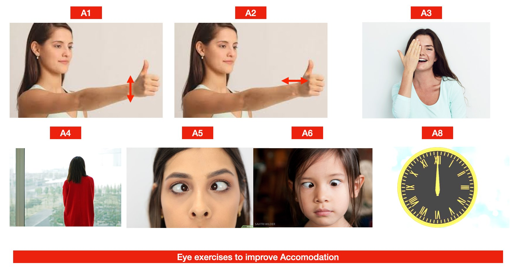
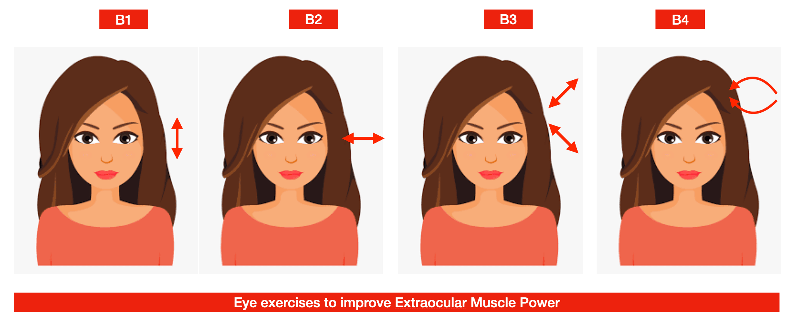
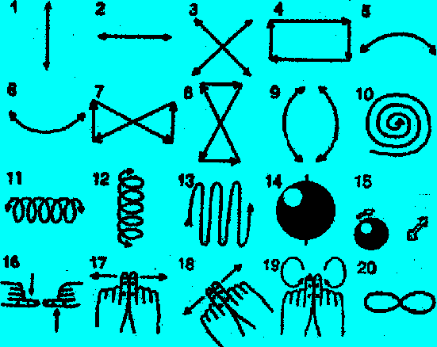
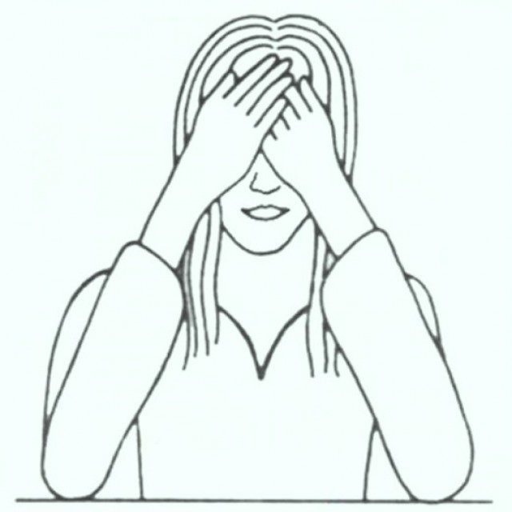

Eye exercises can make tired eyes feel better and, for one specific problem, convergence insufficiency, they are a proven treatment. They cannot reduce your glasses number or cure cataract, glaucoma or myopia. Here are the exercises that are worth doing, how to do them, and when to see an eye doctor instead.
Important: no exercise, yoga or "miracle" technique reduces spectacle power. If an advertisement promises that you can throw away your glasses, it is not true.
| Problem | Helpful exercise | How good is the evidence? |
|---|---|---|
| Eye strain from phone or computer | 20-20-20 breaks, near-far focusing, palming | Good for comfort; widely advised by eye doctors |
| Dry, gritty eyes while using screens | Full-blink exercise | Modest; helps alongside lubricating drops |
| Convergence insufficiency (strain or double vision when reading) | Vergence therapy, pencil push-ups | Strong (CITT trials), when the diagnosis is confirmed |
| Lazy eye (amblyopia) in children | Glasses, patching, prescribed digital therapy | Strong, but only under an eye specialist |
| Minus or plus number, astigmatism, reading glasses | None | No exercise works |
| Cataract, glaucoma, retina disease | None | No exercise works; needs treatment |
Every 20 minutes, look at something about 20 feet (6 metres) away for 20 seconds. Close work keeps the focusing muscle (ciliary muscle) contracted; looking far lets it relax. Set a reminder on your phone or computer until it becomes a habit. Read more on computer vision syndrome.
We blink much less, and less completely, while looking at screens. Several times an hour: close your eyes gently, pause for 2 seconds, then squeeze them lightly shut for 2 seconds, and open. Repeat 5 times. This spreads the tear film and oil from the lid glands. If dryness persists, see our dry eye treatment page.

Hold your thumb about 25 to 30 cm in front of your nose. Look at it for 3 to 5 seconds, then look at an object across the room for 3 to 5 seconds. Repeat 10 times. This exercises the focusing system and is a pleasant break during long reading or screen work.
Hold a pencil at arm's length with a small letter on it, level with your nose. Keep the letter single and clear while you slowly bring it towards your nose. Stop as soon as it doubles, then move it back until it is single again and repeat. Do 10 to 15 repetitions, a few times a day.
Use this only if an eye doctor has diagnosed convergence insufficiency. In the CITT trial, supervised in-office vergence therapy with home exercises worked better than pencil push-ups alone, so a structured programme is best for persistent symptoms.

Sit comfortably and keep your head still. Slowly look up and down 8 to 10 times, then side to side, then diagonally, and finally make slow circles in each direction 4 to 6 times. These movements feel relaxing, but they do not strengthen eye muscles or correct a squint.


Remove your glasses. Rub your palms together until warm, then cup them over your closed eyes so the edges rest on your cheekbones and nose and no light gets in. Do not press on the eyes. Breathe slowly for 1 to 3 minutes. Palming is a simple way to rest the eyes and mind after long screen work; it does not improve vision itself.
For children with amblyopia, some eye specialists now prescribe dichoptic digital therapy, in which each eye sees a different image while watching videos or playing games (for example, Luminopia, approved by the US FDA in 2021 for children aged 4 to 7). These are add-ons to glasses and patching, not replacements, and should be used only under specialist care. See children's eye check-ups.
No. Eye exercises cannot change the shape or length of the eye, so they cannot reduce myopia (minus number), hypermetropia, astigmatism or the reading glasses of presbyopia. Claims that they can, including the Bates method, are not supported by research.
The 20-20-20 rule: every 20 minutes, look at something about 20 feet (6 metres) away for 20 seconds. Add a few slow, full blinks. This relaxes focusing and reduces dryness.
Yes, for convergence insufficiency, where the eyes struggle to turn inwards for reading. The Convergence Insufficiency Treatment Trial (CITT) found that supervised vergence therapy with home exercises works best. An eye doctor should confirm the diagnosis first.
Exercises alone do not treat amblyopia. Treatment is glasses plus patching or atropine drops, and in some children prescribed dichoptic digital therapy. This must be guided by an eye specialist, and works best in young children.
A few minutes, several times a day, is enough for comfort exercises such as 20-20-20 breaks, blinking and palming. Stop if an exercise causes pain, double vision or headache, and see an eye doctor.
Sources: American Academy of Ophthalmology, "Computers, Digital Devices and Eye Strain"; Convergence Insufficiency Treatment Trial Study Group, Arch Ophthalmol 2008;126:1336-49; US FDA De Novo authorisation for Luminopia One (2021).
This page is for general information. Please consult your eye doctor before starting exercises for a specific eye problem. — Dr Dhaval Patel (MD, AIIMS Delhi)
Need an eye check-up in Ahmedabad? Dr. Dhaval Patel, MD (AIIMS New Delhi), has performed more than 25,000 cataract surgeries and sees patients at Sadbhaav Eye & Dental Clinic, Motera, close to Chandkheda, Sabarmati, Visat and Koteshwar. See cataract surgery cost or book a consultation.
Where healthy eyes and confident smiles come together.
Eye care by an AIIMS-trained ophthalmologist; dental care by an MDS endodontist — both dedicated specialists in their respective fields.
Dr. Dhaval Patel brings 15+ years of clinical experience since starting his ophthalmology residency at AIIMS, New Delhi in 2011.
Our staff communicates comfortably in both Gujarati and English, so every step of your visit — from reception to aftercare instructions — is easy to follow.
Dr Dhaval Patel has conducted many eye camps in Africa and visits yearly for the same.